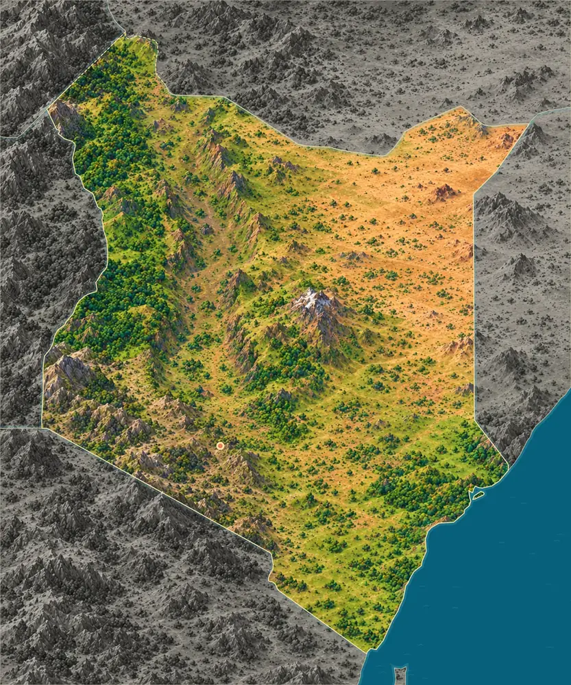
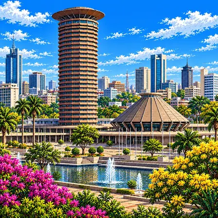
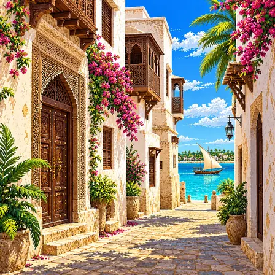
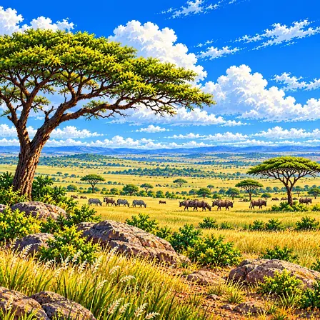
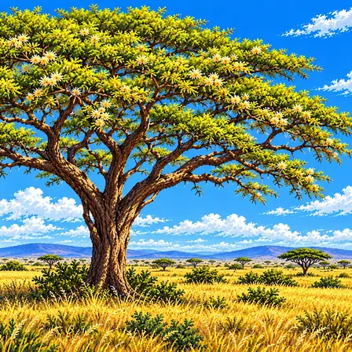
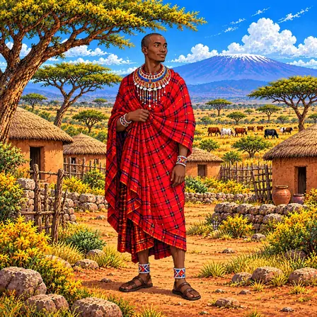
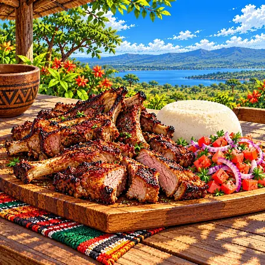
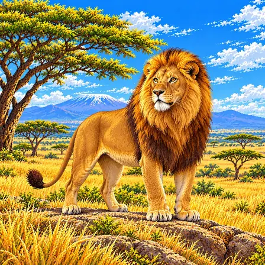
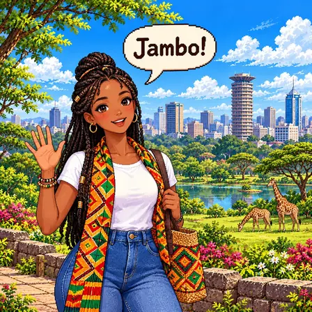

아프리카에서 두 번째로 높은 산
케냐산은 높이 5,199m로, 아프리카에서 두 번째로 높은 산이에요. 적도 가까이에 있지만 꼭대기에는 작은 빙하가 남아 있고, 산과 둘레의 숲은 유네스코 세계유산이에요.

케냐 땅은 대부분 비가 적은 메마른 평원이에요. 한가운데 높은 땅에는 꼭대기에 얼음이 남은 케냐산이 솟아 있어요.
케냐는 인도양 해안의 낮은 땅에서 가운데 고원으로 갈수록 높아지고, 고원은 큰 골짜기(그레이트 리프트 밸리)로 갈라져 있어요. 고원 동쪽에는 오래된 화산인 케냐산이 솟아 있어요.
케냐산은 높이 5,199m로, 아프리카에서 두 번째로 높은 산이에요. 적도 가까이에 있지만 꼭대기에는 작은 빙하가 남아 있고, 산과 둘레의 숲은 유네스코 세계유산이에요.
케냐 땅의 약 80%는 비가 적은 메마른 땅이나 조금 메마른 땅이에요. 이런 곳은 대부분 낮은 평원이고, 사이사이에 언덕과 작은 산이 솟아 있어요.
출처: FAO, Kenya: socio-economic and ecological characteristics
케냐 동쪽은 인도양과 만나요. 말린디 바다에는 1968년 케냐에서 처음으로 바다 보호구역이 생겼고, 해안을 따라 자라는 산호초와 바닷풀 밭, 맹그로브 숲이 있어요.
출처: Kenya Wildlife Service, Malindi Marine National Park & Reserve
큰 골짜기 바닥에는 보고리아, 나쿠루, 엘레멘타이타처럼 얕고 물이 짠 호수들이 있어요. 이 호수들은 작은홍학이 먹이를 찾는 가장 중요한 곳이라 2011년 유네스코 세계유산이 됐어요.
그레이트 리프트 밸리는 땅속의 큰 힘과 화산 활동으로 땅이 갈라져 생긴 골짜기예요. 골짜기 양옆에는 가파른 절벽이 서 있고, 바닥에는 뜨거운 샘과 물을 뿜는 샘(간헐천)이 있어요.
케냐산은 약 310만~260만 년 전에 불을 뿜던 화산이에요. 그때는 높이가 6,500m쯤이었을 것으로 보이는데, 오랜 세월 깎여 지금의 뾰족한 봉우리들이 남았어요.
케냐에서 잘 알려진 도시, 역사유산, 자연, 식물, 문화, 음식, 동물, 인사말, 국기를 한 장씩 그렸어요.

나이로비는 케냐의 수도예요. 이름은 '차가운 물'이라는 뜻이에요. 도시 바로 옆 국립공원에서 사자와 기린을 볼 수 있어요.
나이로비는 케냐의 수도로 2019년 인구조사에서 약 440만 명이 살았어요. 1899년 영국 철도 건설 기지로 세워졌으며, '나이로비'는 마사이어로 '차가운 물'을 뜻해요. 해발 1,795m에 위치해 아프리카에서 가장 시원한 수도 중 하나예요. 도시 바로 옆에 나이로비 국립공원이 있어, 고층 빌딩을 배경으로 사자를 볼 수 있는 드문 도시예요.

라무 올드타운은 섬에 있는 오래된 마을이에요. 자동차가 없어서 당나귀와 배로 다녀요. 나무를 정성껏 깎아 만든 커다란 문이 유명해요.
라무 올드타운은 케냐 북부 해안 섬의 스와힐리 문화 고도예요. 14세기부터 아랍·인도·아프리카 문화가 700년 이상 융합됐어요. 자동차가 없고 당나귀와 배만 다니는 독특한 생활 방식이 유지되고 있어요. 산호석으로 지어진 전통 건축과 정교하게 조각된 높은 문(스와힐리 도어)이 특징이에요. 2001년 유네스코 세계유산이에요.

마사이 마라는 사자와 코끼리가 사는 넓은 초원이에요. 해마다 200만 마리쯤의 누와 얼룩말이 줄지어 먼 길을 이동해요. 이 모습은 세상에서 가장 멋진 동물 행진 가운데 하나예요.
마사이 마라는 케냐 남서부의 1,510km² 야생동물 보호구역이에요. 탄자니아 세렝게티와 이어진 생태계로, 매년 7~10월 약 200만 마리의 누·얼룩말이 대이동해요. 이 지역은 오랫동안 소를 기르며 살아온 마사이족의 땅이기도 해요. 사자·코끼리·표범·코뿔소·물소 빅파이브를 모두 볼 수 있어요.

아카시아는 우산처럼 넓게 퍼진 나무예요. 뜨거운 초원에서 동물들에게 그늘을 만들어 줘요. 기린이 긴 혀로 잎을 뜯어 먹어요.
아카시아는 케냐 사바나의 상징과도 같은 나무예요. 우산처럼 넓게 퍼진 수관이 특징으로, 뜨거운 초원에서 동물들에게 그늘을 제공해요. 기린, 얼룩말, 임팔라가 아카시아 잎과 열매를 먹으며 살아가고, 마사이마라 초원의 노을 풍경에서 빠질 수 없는 나무예요.

마사이 사람들은 빨간 천을 몸에 둘러 입어요. 빨간색은 넓은 초원에서도 멀리서 잘 보여요. 구슬로 만든 넓은 목걸이도 함께 해요.
마사이 전통복은 케냐 초원에서 소를 키우며 사는 마사이족의 옷차림이에요. 슈카라 부르는 선명한 붉은 천을 몸에 둘러 입는데, 붉은색은 멀리서도 눈에 잘 띄어 초원에서 서로를 알아보게 해줘요. 구슬을 꿰어 만든 넓은 목걸이와 팔찌는 나이와 결혼 여부 같은 정보를 색과 무늬로 표현해요. 구슬 장신구는 여성들이 손수 만들어 대대로 솜씨를 물려줘요. 오늘날에도 마사이족은 전통 복장을 일상에서 그대로 입고 생활해요.

냐마 초마는 '구운 고기'라는 뜻이에요. 염소고기나 소고기를 숯불에 천천히 구워요. 가족과 친구들이 모여 함께 나눠 먹어요.
냐마 초마는 스와힐리어로 '구운 고기'라는 뜻의 케냐 대표 바비큐예요. 염소고기나 소고기를 소금만 뿌려 숯불에 1시간 가까이 천천히 구워, 겉은 진하게 그을리고 속은 촉촉해요. 토마토와 양파를 라임즙에 버무린 카춤바리 샐러드를 곁들여 느끼함을 잡아요. 옥수수 가루를 쪄서 만든 우갈리와 함께 손으로 뜯어 먹는 것이 케냐식이에요. 주말이면 가족과 친구들이 고기 굽는 식당에 모여 함께 나눠 먹는 사교 음식이에요.

사자는 고양이과 동물 가운데 무리를 지어 사는 유일한 동물이에요. 사냥은 주로 암사자들이 힘을 합쳐 해요. 울음소리가 8km 밖까지 들려요.
사자는 고양이과 동물 중 유일하게 무리를 지어 사는 동물이에요. 케냐 마사이마라 초원에서 암컷들과 새끼들로 이루어진 10~20마리의 무리(프라이드)가 함께 살아요. 수컷의 풍성한 갈기는 나이가 들수록 짙어져요. 사냥은 주로 암컷들이 힘을 합쳐 하고, 울음소리는 8km 밖까지 들려 멀리 있는 가족과 신호를 주고받아요. 초원이 줄면서 수가 감소해 케냐는 국립보호구에서 사자를 지키고 있어요.

잠보는 스와힐리어로 '안녕'이라는 인사예요. 여행자를 반갑게 맞을 때 자주 써요. '하쿠나 마타타(걱정 없어)'도 스와힐리어예요.
Jambo는 '잠보'라고 읽는 스와힐리어 인사말이에요. '후잠보?(별일 없으세요?)'를 줄인 말로, 특히 여행자를 반갑게 맞을 때 써요. 스와힐리어는 아프리카 동해안의 무역에서 자라난 언어로, 아프리카 토박이말에 아랍어 낱말이 많이 섞여 있어요. 케냐와 탄자니아 등 동아프리카에서 약 2억 명이 써요. '하쿠나 마타타(걱정 없어)'도 스와힐리어로, 노래 덕분에 세계에 널리 알려졌어요.

케냐 국기는 검정, 빨강, 초록 세 줄로 되어 있어요. 가운데에는 마사이 사람들의 방패와 창이 그려져 있어요. 방패와 창은 나라와 자유를 지킨다는 뜻이에요.
케냐 국기는 검정·빨강·초록 세 개의 가로줄과 그 사이의 가는 흰 선으로 이루어져 있어요. 한가운데에는 마사이족의 방패와 창 두 자루가 그려져 있어요. 방패와 창은 나라와 자유를 지킨다는 뜻을 담고 있어요. 검정은 케냐 국민, 초록은 풍요로운 국토, 흰색은 평화를 나타낸다고 설명돼요. 1963년에 나라가 새로 출발하면서 제정됐어요.